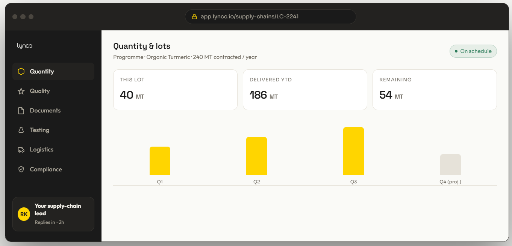
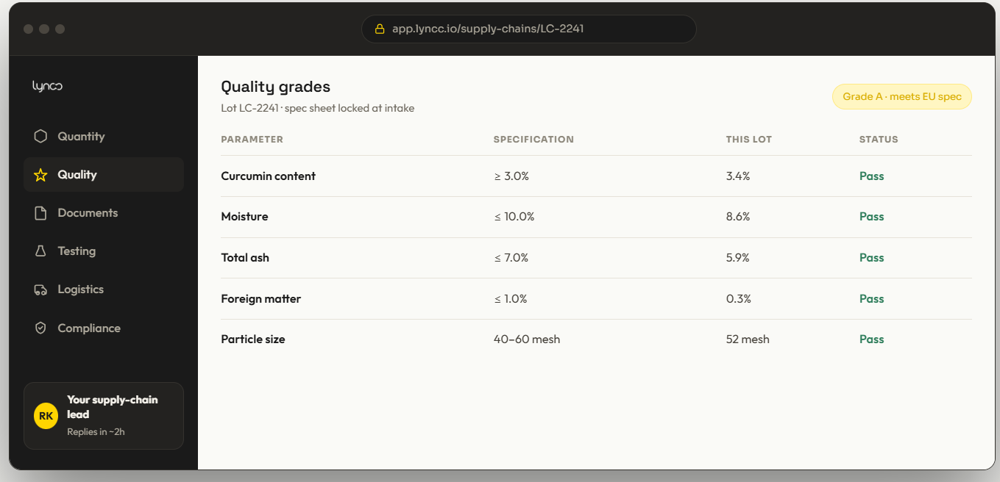
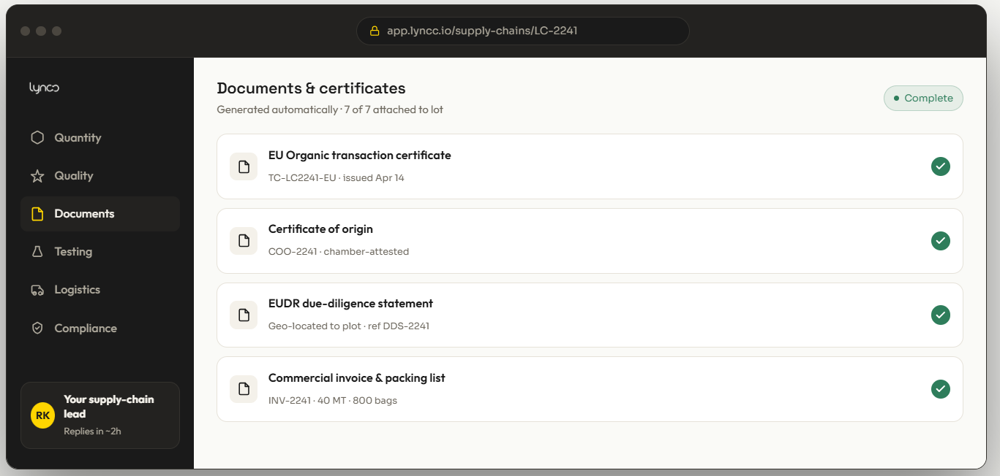
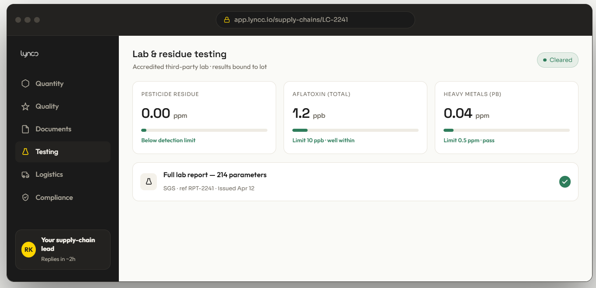
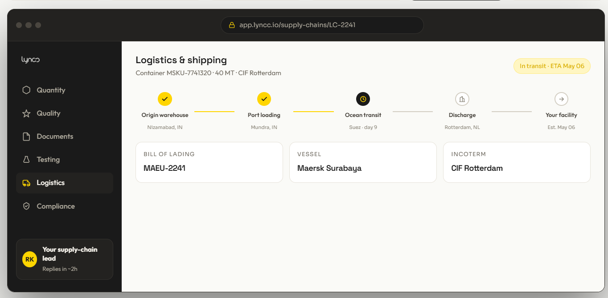
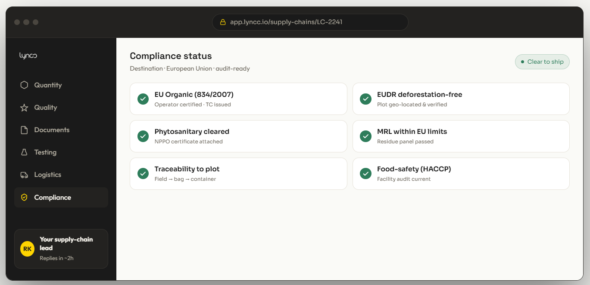

Designing the Experience
The interface was built with a minimal, clutter-free UI to prioritize readability and trust. A distinct yellow accent guides the user through the primary conversion funnel.
01. Secure Onboarding
A simple, secure entry point. The login and signup flows require essential enterprise user information while keeping the interface clean and maintaining consistent brand typography.

The Platform Flow
A seamless 6-step journey from intake to compliance.
Quantity & Lots
Tracking the contracted volume versus delivered year-to-date. The UI utilizes clear, high-contrast metric cards and a minimalist bar chart to give supply-chain leads instant visibility into their quarterly projections.

Quality Grades
Locking in the spec sheet at intake. This view maps key parameters like Curcumin content and Moisture against EU specifications, using simple 'Pass/Fail' status indicators to reduce cognitive load.

Documents & Certificates
An automated document repository. All required paperwork—from EU Organic transaction certificates to Commercial invoices—are automatically generated and attached to the specific lot.

Lab & Residue Testing
Visualizing third-party lab results. I designed custom progress bars to show exactly where pesticide and heavy metal levels sit relative to strict EU detection limits.

Logistics & Shipping
A dynamic timeline tracking the container's journey from the origin warehouse in Nizamabad to the final discharge in Rotterdam. Key shipping data like the Bill of Lading is kept front and center.

Compliance Status
The final gatekeeper. A grid of automated checks ensures the lot is EUDR deforestation-free and HACCP compliant before it is flagged as 'Clear to ship'.
